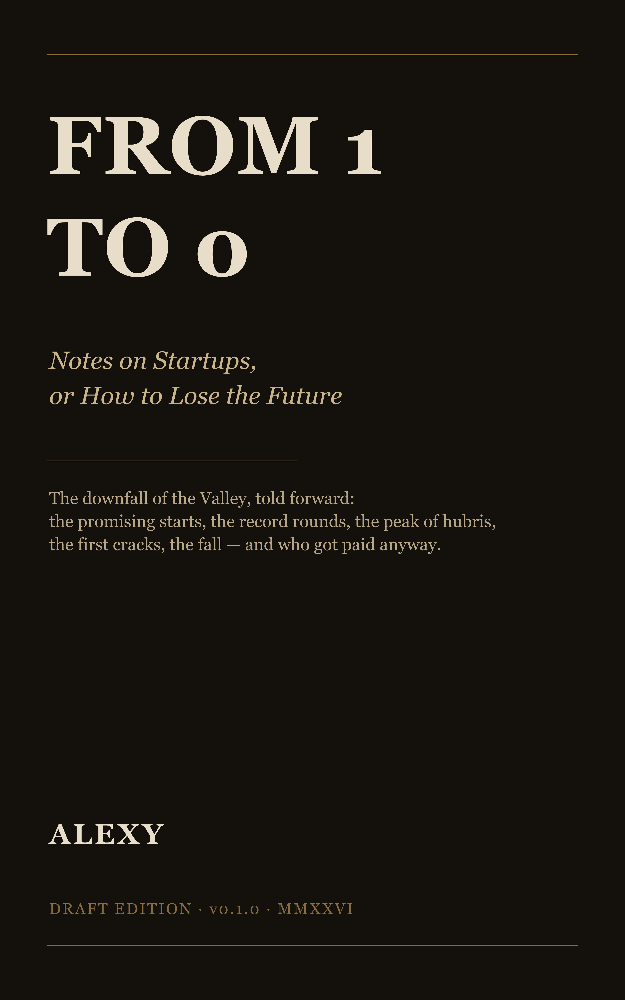

Public preview · Draft edition v0.1.0
Notes on Startups, or How to Lose the Future

An anti-history of Silicon Valley, written as the deliberate opposite of Zero to One. Where the survivor literature teaches the catechism of the singular founder, this book performs the autopsy: the spectacular crashes — Clinkle, Pets.com, WeWork, BranchOut, Theranos, Quibi, and their many forgotten companions — the fateful decisions that ripped failure from the jaws of victory, and the venture capitalists who financed all of it and then wrote the eulogies as if they had been bystanders.
This is a limited preview, not the complete book. It contains the epigraphs, the full plan of the book, the Introduction ("The Silent Evidence"), and the opening chapter — the Anti-Naval Ontology of Failure: twelve numbered principles for losing a billion dollars without even trying, each documented with a corpse. The complete draft continues through six braided parts and a closing essay on the culture that required it all.